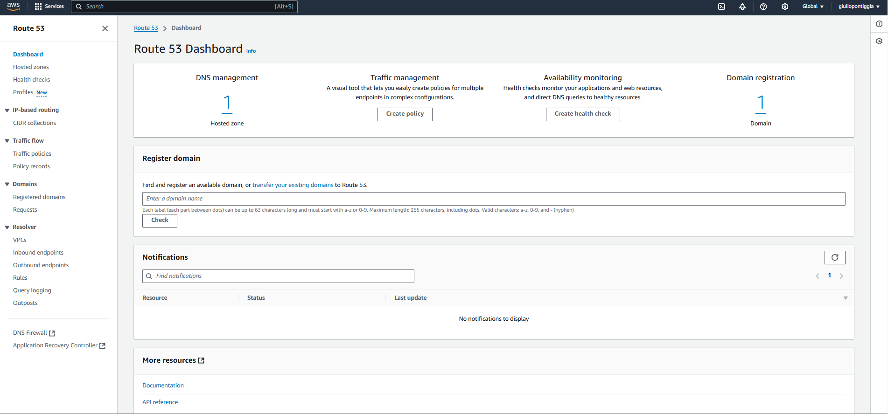
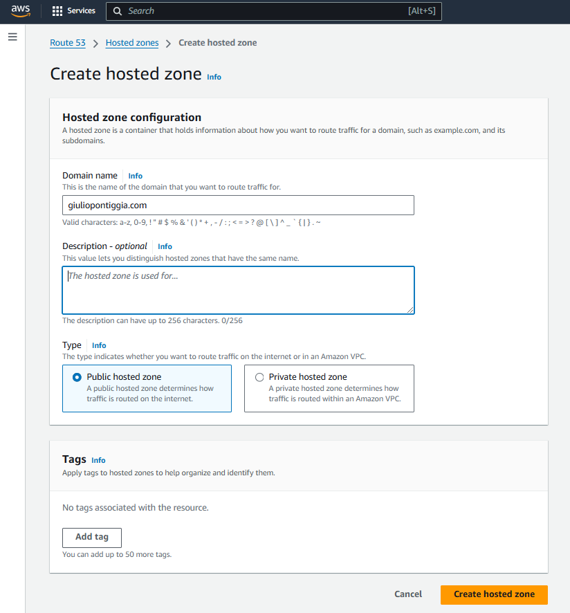
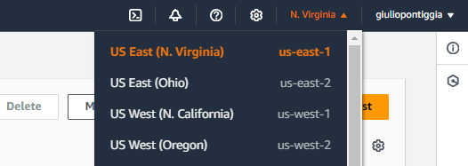
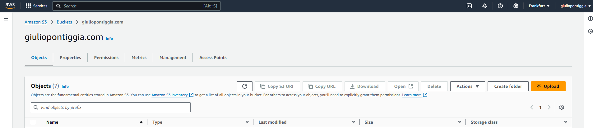
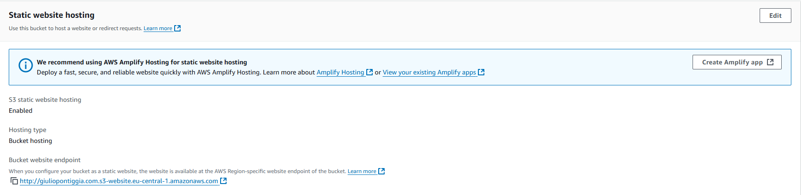

Host a website on AWS from zero
Register a domain on Route 53
To run a working website you need a domain from where clients can reach it typing the fqdn on the research bar of their browser, you can do that buying and registering a domain on Route53.
Open AWS console and enter Route 53
Click on domain registration to register you brand new domain

Click on domain registration to register you brand new domain
1.1 Route 53 dashboard - Domain registration
In the top right of the screen click on register domains and enter your desired 2LD (in example.com example is the 2LD).
Once found your desired domain proceed with the checkout and fill the contacts information.
Once done you can go back to the Route 53 dashboard and click on hosted zone
Here you need to create the hosted zone for your new domain where we’ll configure all the DNS records needed for your website.

Once found your desired domain proceed with the checkout and fill the contacts information.
Once done you can go back to the Route 53 dashboard and click on hosted zone
Here you need to create the hosted zone for your new domain where we’ll configure all the DNS records needed for your website.
1.2 Create hosted zone
Input the domain name just created, enter a description if you want and create the hosted zone.
After that you should see it in the list of hosted zones in Route 53.
After that you should see it in the list of hosted zones in Route 53.
Request the certificates with Certificate manager
To avoid the browser alerts saying that the website is not secure you need to request certificates, in that way clients can secure the connection to the server that will host your website.
Make sure that at the top right of the screen the selected region is us-east-1.
We will create the certificates in this region as CloudFront (another AWS service we’ll user later) manages certificates in this region.
If you plan to not use cloudfront you can skip this task.

Make sure that at the top right of the screen the selected region is us-east-1.
We will create the certificates in this region as CloudFront (another AWS service we’ll user later) manages certificates in this region.
If you plan to not use cloudfront you can skip this task.
2.1 Change region to us-east-1
In Certificate manager’s dashboard request certificate and click next
Enter the domain name you chose before, it’s suggested to enter it with www. and without at the beginning of the fqdn (ex. www.example.com and example.com)
You might need to wait some time for the next steps as the certificate will need to be validated.
Once you see the certificate status as “issued” you can click on it to enter the configuration and click on “Create records in Route 53” and create the records.
Now if you go back to route 53, enter your hosted zones and click on the previously created hosted zone you’ll see 2 new CNAME records
Enter the domain name you chose before, it’s suggested to enter it with www. and without at the beginning of the fqdn (ex. www.example.com and example.com)
You might need to wait some time for the next steps as the certificate will need to be validated.
Once you see the certificate status as “issued” you can click on it to enter the configuration and click on “Create records in Route 53” and create the records.
Now if you go back to route 53, enter your hosted zones and click on the previously created hosted zone you’ll see 2 new CNAME records
Create the S3 bucket
The S3 bucket for your website will store the website’s code images and all the files that will be needed for the website.
Enter the dashboard of S3 and create a new bucket, as name enter the domain of your website (ex. example.com) and unselect “block all public access” as the files in the bucket needs to be accessed for the website to be working.
Enter the bucket just created and click on properties

Enter the dashboard of S3 and create a new bucket, as name enter the domain of your website (ex. example.com) and unselect “block all public access” as the files in the bucket needs to be accessed for the website to be working.
Enter the bucket just created and click on properties
3.1 S3 bucket properties
Scroll down to the end and you’ll find a “static website hosting” section, click on edit:
In the page of the S3 bucket navigate to permissions, select bucket policy and enter this policy replacing with the name of your website’s domain
- set static website hosting to enable
- set “host a static website”
- enter the index document name (the html file that will be shown when navigating to the website)
In the page of the S3 bucket navigate to permissions, select bucket policy and enter this policy replacing
{
"Version": "2012-10-17",
"Statement": [
{
"Sid": "AddPerm",
"Effect": "Allow",
"Principal": "*",
"Action": "s3:GetObject",
"Resource": "arn:aws:s3:::/*"
}
]
}
This policy make sure that everyone can access the content of this bucket to access your website, this means you don’t want anything private to be on that S3 bucket.
Once done the “Static website hosting” section will look something like this:

Once done the “Static website hosting” section will look something like this:
3.2 S3 bucket static website hosting overview
Now you can upload the files for your website in the bucket and you can test them accessing the web page through the URL you see at the bottom of the “Static website hosting” section.
Configure cloudfront distribution
To help the distribution of your website across the world increasing performances and security you have to create a cloudfront distribution.
Open Cloudfront dashboard and create a new distribution
Open Cloudfront dashboard and create a new distribution
- as origin domain and name you should put the domain of your S3 bucket
- in viewer protocol policy choose “redirect HTTP to HTTPS”
- select “CachingOptimized” as Cache policy
4.1 Distribution's cache key and origin configuration
Finally create the distribution and now you have the website working.
GitHub integration with codepipeline (optional)
This section helps you implement CodePipeline with your S3 bucket and the git repository of your website so that when committing to your repository the changes are automatically updated to your S3 bucket and consequentially to your website.
Open Codepipeline from AWS Console and click Create Pipeline.

- Select custom pipeline
- Choose the name of the pipeline and click Next
- Choose your source provider (in my case Github via App)
- Click connect to GitHub
- Enter the name of the connection and then Login with your Github credentials
- Click connect
- Select the repository and branch name
- Skip build stage
- Select Amazon S3 as Deploy provider
- Enter the S3 bucket and select “Extract file before deploy”
5.1 Deploy stage codepipeline configuration
Click Next and create pipeline and your GitHub repository is synced with your S3 bucket in AWS.